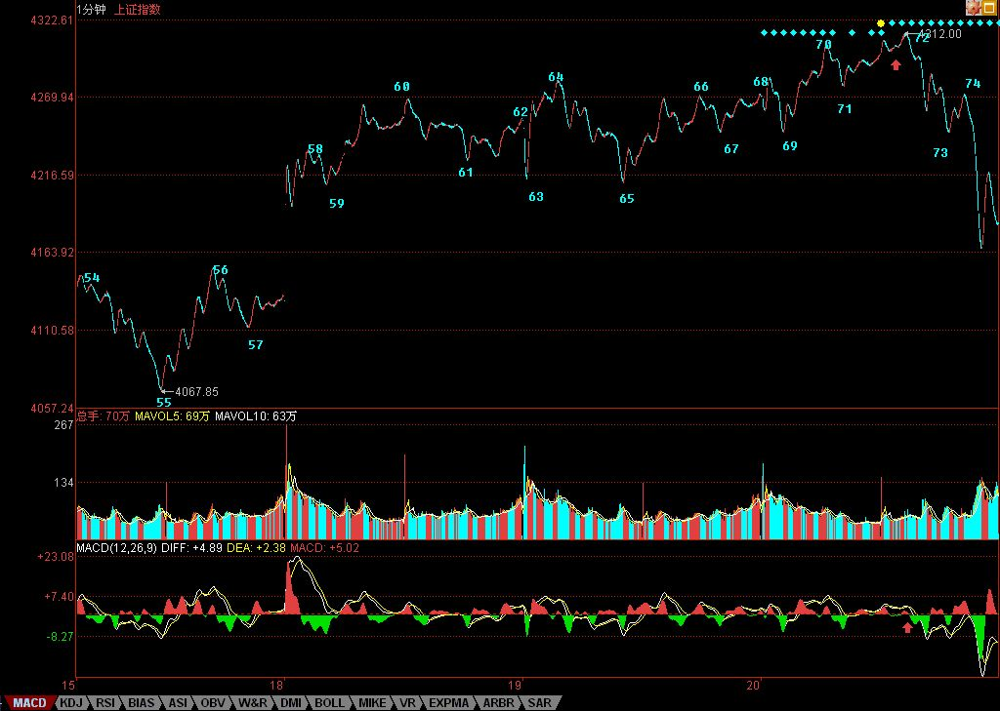

0558 - 教你炒股票61：区间套定位标准图解（分析示范六）¶
日期：(2007-06-21 08:13:21) 分类：[时政经济（缠中说禅经济学）]
有人经常担心，万一人人都学会本ID的理论，那么本ID的理论还有用吗？问这种问题的，基本就没搞明白本ID的理论。而且，人人都学会本ID的理论，这本来就是一个假命题，像孔男人这样的文科生，本ID从来都觉得他们能学会的机会比较渺茫。注意本ID这里是有定语的，没有打击所有文科生，而是说孔男人这样的文科生。当然，如果有人爱自己往孔男人这样的文科生的套里去，本ID没什么意见。
有些无聊问题总是被提着，诸如中枢的意义是什么？对于一个实际操作者来说，中枢的意义就是没有意义，而没有意义就是最大的意义，因为你只要根据中枢的实际走势去反应，问题的关键是你去看明白走势的分解而不是中枢的意义，更重要的就是根据走势的分解去采取正确的反应。如果孔男人之类的文科生想探讨什么中枢意义，那么就让他们探讨去好了，就如同基督教的神甫千百年来YY上帝的意义一样，对于本ID来说，上帝有什么垃圾意义并不重要，关键是如果真有什么上帝，那么也只是被面首的对象。股票是用来操作的，而不是用来意义的。
还有些人不断地问，为什么1分钟的顶背驰，有时候跌幅很大，有时候很小，究竟什么时候该走？这种问题是典型的垃圾问题。如果你的操作级别是1分钟级别的，那么1分钟的顶背驰你就该走了，至于后面的跌幅是大是小，和你有什么关系？你只要耐心等待市场走出新的1分钟底背驰就可以。反之，如果你的操作级别是月线的，那么1分钟的顶背驰和你有什么关系？你既然已经决定是按月线进出的，那么1分钟级别的所有震荡都是可以接受的，可以忽略的。别说1分钟的，就算这次530所谓的大跌，如果你真是月线级别操作的，看都不用看，这种级别的震荡根本就在月线可忍受的范围内，只有那些如孔男人那样的文科生才会认为本ID的理论只能看1分钟的图，本ID已经多次说过，如果你按年线的级别，那么你比巴菲特还要巴菲特，关键是你有没有这样的耐心。
好了，没必要为孔男人这样的文科生浪费时间，看看下图，一个区间套定位的标准图解。如果上学时学过基本的数学分析课程，应该不难明白区间套定位，如果没学过的，那就费点劲，虽然前面的课程已经反复说过，但当昨天2007年6月20日13点30前后大盘走势实际地走出来时，能当下看明白的有几个人？因此，以下的分析请仔细研究。

要比较力度，发现背驰，首先要搞清楚是哪两段比较，其实，只要是围绕一中枢的两段走势都可以比较力度。显然，对于60-65这个1分钟中枢，55-60与65开始的一段之间就可以比较。在实际操作中，65开始的走势，由于没实际走出来，所以在和55-60比较时，都可以先假设是进入背驰段。而当走势实际走出来，一旦力度大于前者，那么就可以断定背驰段不成立，也就不会出现背驰。在没有证据否定背驰之前，就要观察从65开始的一段其内部结构中的背驰情况，这种方法可以逐次下去，这就是区间套的定位方法，这种方法，可以在当下精确地定位走势的转折点。
对于65开始背驰段的内部走势，当下走到69时，并不构成任何背驰，为什么？因为背驰如果没有创新高，是不存在的。所以，只有等70点出现时，大盘才进入真正的背驰危险区。由于69-70段与67-68段比并没有盘整背驰，所以70点并没有走的理由，除非你是按线段以下级别操作的。而71点，构成对66-69这1分钟中枢的第三类买点。按照本ID的理论，其后无非只有两种情况，中枢级别扩展或者走出新的中枢上移。对后者，一个最基本的要求就是，从71点这第三类买点开始的向上段不能出现盘整背驰，而在实际中，不难发现，71点开始的走势力度明显比不上69-70段，而对于65-66段，69开始的走势力度也明显比不上，这从两者下面对应的MACD红柱子面积之和可以辅助判断。
因此，65开始的走势是第一重背驰段，69开始的是第二重背驰段，也就是65开始背驰段的背驰段，而71开始的是第三重背驰段，也就是65开始背驰段的背驰段的背驰段，最后当下考察71开始的走势，从走势上红尖头以及MACD上红尖头可以当下知道，71的内部背驰也出现，也就是第四重的背驰段出现了。由此可见，72点这个背驰点的精确定位，是由65开始背驰段的背驰段的背驰段的背驰段构成的，这就构成一个区间套的精确定位，这一切，都可以当下地进行。
对于实际的操作，72四重背驰点出现后，卖是唯一的选择，而区别只在于卖多少。当然，如果是按5分钟级别以及以下级别操作的，当然就全卖了，因为后面至少会形成5分钟的中枢震荡，实际上，60-69就是一个5分钟中枢。而对于大级别操作的，显然不可能因一个5分钟震荡而清仓，所以可以根据5分钟震荡可以容纳的数量进行对冲操作。小资金的利润率，在相同操作水平下，显然要远高于大资金的，例如像这样的卖点，小资金就可以全仓操作，大资金是不可能的。
如果说72的判断有点难度，需要知道区间套的精确定位，那么74的第二类卖点，就一点难度都没有了。唯一有点需要分辨的就是，这第二类卖点，同时又是一个1分钟中枢的第三类卖点，究竟哪个中枢？显然不是70-73这个，因为这里需要满足结合律。一个第三类买卖点，至少需要有5段次级别的，前三段构成中枢，第四段离开中枢，第5段构成第三类买卖点。其实，这里的答案很简单，74点是69-72这个中枢的第三类卖点。也就是说，74点既是一个第二类卖点，又是一个第三类卖点，以前的课程已经说过，一旦出现二、三类买卖点同时出现的情况，往往后面的力度值得关注。实际上，74后面出现更大力度的下跌，这并没有任何奇怪的地方。
对于60-69这个5分钟中枢，69的4244点是一个关键位置，如果在其下出现第三类卖点，那么走势至少将扩展成一个30分钟中枢，调整的幅度与压力就大了。而对于72开始的走势，73很重要，要重新走强，必须冲破73这一点，该点位置恰好也是4244点。因此，短线的4244点十分关键，重新站稳，则大盘将最多是5分钟中枢的延伸震荡，否则即使不演化成5分钟级别的下跌，也将扩展成30分钟级别的中枢震荡。
不管学什么，是否愿意学，首先请先把学的东西搞明白，否则浪费的是自己的时间，还不如不学。本ID的理论，你爱学不学，就像无论你是否相信万有引力，无论你是上帝还是小布什，该存在的依然存在。本ID的理论亦如此，无论任何人学与否，无论你是庄家、管理层还是什么玩意，都不增一分、不减一分，都一样。
因此，千万别学孔男人而成为如孔男人那样的文科生，究竟孔男人那样的文科生是一种什么玩意，看看下面两个连接就明白了。
附录：
如果在看过上面的课程，今天的走势都看不明白不会操作，那你大概要面临两种选择：一、去和孔男人为伍；二、洗心革面、好好学习。上面说到的4244点的技术意义，在今天走势中表露无疑，早上的杀跌补缺口，这次是一个明显的区间套底背驰定位，如果还看不明白，继续加倍努力学习或者放弃孔男人去，自己选择吧。
明天还是这个4244点，站稳就走强，否则继续5分钟的中枢震荡，并且要小心出现第三类卖点。明天又是周末，利空又准备漫天飞，本ID早在前面说过，这里必须用震荡来化解技术、心理、政策的压力，如果整天还是周一看没消息就跳空，然后继续不断震荡等周五，然后周末等消息，这样轮回下去，是走不出坚定有力的行情的，所以关键还是心态，整个市场的心态必须在震荡中修复。今天最低4147点，和本ID反复说的1/2线4144点相差不远，中线关键还是看这线，不破就是强势。
个股方面，本ID那16只股票的剧本一大早就告诉大家了，本ID说的是16只，已经有8只创新高，今天还3只涨停的。为什么不16只一起来，首先这操作不过来，其次，这样是资金利用率最高的，如果你按照这节奏去轮动操作，对于小资金，你这次反弹的收益率如果少于100%，那你的毛病就大了。为什么要看买卖点，为什么要强调节奏，最终都是为了资金的安全与利用率，这对大资金同样的，而对小资金，掌握了节奏，你的效率更高。
注意，本ID的意思不是你一定要买本ID这16只股票，只是事先告诉并直播本ID的操作节奏，让大家去把握其中资金运用的道理。要有效率，必须有节奏，要有节奏，就首先要把握好买卖点，这里的逻辑关系，请好好思考明白。
今天下午有一个聚会，谈谈心、统一一下思想，必须下了，明早见。
本文评论获取自靠谱的方式，包含疑似禅师的回复数量：[22]
UID:[1215172700] 昵称：缠中说禅 日期：(2007-06-21 08:14:25)
今天解盘下午3点后附录本帖。先下，再见。
UID:[0] 昵称：[匿名] Q 日期：(2007-06-21 08:19:31)
SF?
UID:[0] 昵称：[匿名] CCTV 日期：(2007-06-21 08:20:39)
我来啦！！！！
UID:[0] 昵称：[匿名] CCTV 日期：(2007-06-21 08:24:30)
[匿名] 新浪网友 2007-06-21 08:18:48
[匿名] 新浪网友 2007-06-20 21:09:28
跌了40%后一直空仓还容易等明朗点了买了569 满想清洗下就可以了 等了6天今天才知道是什么大背弛要的时间更长 想坚定持有 可又遥遥无期 还剩一半的资金告诉我明天黯然退出了 等等看吧 不怪别人 只怪自己笨不懂 郁闷伤心 进入股市到现在赔了一半了
——————
以后大家看到博主进哪个股，都一定要马上逃出来。她是庄，我们是散，好比关在同个屋里作决斗，不管底背还是顶背，我们哪是她的对手，咱还是跑出来找个傻庄玩玩吧
--
你SB有病呀？？？？600569妹子停牌前9元让大家买，逃过一次大跌，复牌后又告诉大家剧本改变，10元随便走，你SB还要买？？？？？？000999妹子6元、600635妹子5元、000777妹子8元、000416妹子3元等等，看看妹子告诉大家的位置！！！你SB就那时候走就真SB啦！！！！！
UID:[0] 昵称：[匿名] CCTV 日期：(2007-06-21 08:29:41)
[匿名] 徜徉在你耳边的风 2007-06-21 08:24:52
禅女早上好，今天挺挺你。昨天部分博友讲了一些泄气话，也对博主的理论提出了质疑。这与前天的讨论氛围形成鲜明对比，也给“市场先生”两种并存的性格——“贪婪”与“恐惧”一个让人印象深刻的注脚。我作为一个学习“禅论”不到1个月的插班生(幼儿园未毕业)，和各位同学探讨一下禅论。
一、禅女的理论剖析
1、禅论属一种技术分析范畴技术分析有经验总结的成分在里面，不具有先验性，正如人具有分析能力，而不具有预见性一样，自然而然会在实际技术分析中出现这样那样的问题。所以所谓的技术派高手往往在15：00后就活了过来。还有就算分析正确，干与不干，也还是一个问题。昨天略有挫折的各位同学，先别急着找理论的茬，特别是那个声称自己严格按照禅论操作而亏损半年的同学（据在证券的同学讲，那可真是黄金的半年啊，买啥啥涨。我随便买了两只股也60％，嘻嘻）。想想是不是理论与操作脱节，或是看的图选错分析周期了，或是选错股了，或者干脆是……这个有点伤人……自己的IC值不够高。
2、禅论追求的是长期有效的战胜市场请密切注意，禅论本身是长线理论（L11-L14）,短差是其延伸，用来降成本与风险的，还是不要本末倒置了好。禅女自己也说过，不能丢了筹码，要不断降筹码的成本，要用筹码赚筹码。实在看不了图的，不跌破5日线就拿着。即在选好股的前提下，“战略长线，战术短线”。不知禅女把李旭利是不是归于汉奸一类，反正他在去年底高位抛空了工商银行就说的这一句。禅女告诉大家的股基本面应该都没有什么问题，成长性应该是高于市场平均水平的，这样的股加上短差操作，怎么会不是“指数涨一倍，资金四五倍”？。大家心态放好，不要太贪了，只在适合自己的时机操作短差就ok了。
3、禅论本质上也是一种概率分析理论按照禅论的原则，正确买入卖出的概率应该会很大，但概率毕竟是概率，不能做到百分百。全能的上帝能不能创造出自己也举不起来的石头至今仍是未为可知，大家也就别苛求禅女了，她又没有收费，是你自己要来听课的。
--
胡扯！！！妹子的理论和概率没什么关系！！！！知道什么是不患吗？？？？？
UID:[0] 昵称：[匿名] 张三 日期：(2007-06-21 08:36:27)
报到，缠mm好！
UID:[0] 昵称：[匿名] 3G 日期：(2007-06-21 08:54:10)
[匿名] 天朝民工 2007-06-21 08:46:27
就算是年线级别的介入，也要考虑小级别的买卖点，以做高抛低吸吧。这个不是缠博主一向强调的吗？所以“为什么1分钟的顶背驰，有时候跌幅很大，有时候很小，究竟什么时候该走？”这种问题我觉得还是有意义的。恕我愚钝。
、、
这问题楼主课程里早有讲述，最小跌幅是回到原来中枢。
UID:[0] 昵称：[匿名] 3G 日期：(2007-06-21 09:04:17)
[匿名] 快乐VS菜虫 2007-06-21 08:53:24
缠姐，还有一个关键的问题，看你解的图我发现我都看的懂，但是之所以我自己当下没完全解出来我发现主要是对这图的分段有问题。因为在缠姐你解的图上很多高低点很多波动在1分钟图上实际是很明显很明显的，但是为什么缠姐没有把它们也算为一段而只算一段中的一部分呢，这分段的标准是什么，因为如果分段不对会直接导致分析的不对。望解答。
、、
我觉得没什么不同，只是今天的图更复杂。
UID:[0] 昵称：[匿名] CCTV 日期：(2007-06-21 09:16:26)
[匿名] 新浪网友 2007-06-21 09:13:35
估计博主是向老孔示爱不成，因爱成很，隔三差五的就把老孔提溜出来消遣一番。对于博主所谓的“孔庆东气急败坏给了两回复”，对于这两个回复，深深怀疑它的真实性。需要申明：对才高八斗的博主还是非常佩服的，虽然看不懂她的理论。
--
有病呀？？？？当时妹子和孔肥肥打架，这里的老人有谁不知道？？？？你去孔肥肥那里查找都能看到！！！！
UID:[0] 昵称：[匿名] CCTV 日期：(2007-06-21 09:19:56)
[匿名] 新浪网友 2007-06-21 09:13:55
博主在当时分析出来了吗？在72的时候你卖了吗？还是马后炮？
--
你真太孔肥肥啦！！！！
UID:[0] 昵称：[匿名] TT 日期：(2007-06-21 10:04:22)
KAO，也太TM准确，刚好4244？？？？
UID:[0] 昵称：[匿名] TT 日期：(2007-06-21 10:06:33)
[匿名] 新浪网友 2007-06-21 09:43:35
这里的答案很简单，74点是69-72这个中枢的第三类卖点
◎◎◎◎◎◎◎◎◎◎◎◎◎◎◎◎
越扯越不靠边了！69－72是几段？能构成中枢吗？你MA的骗子！
--
69-72有三段，怎么不可以构成中枢？
UID:[0] 昵称：[匿名] 3G 日期：(2007-06-21 11:07:17)
000998停，000915新高，楼主很牛--
UID:[0] 昵称：[匿名] 3G 日期：(2007-06-21 11:13:47)
600578
UID:[0] 昵称：[匿名] CCTV 日期：(2007-06-21 11:19:39)
[匿名] 无语 2007-06-21 11:14:37
缠大嘴的文章我看不懂，我也知道这里很多人看不懂。看不懂我也来，因为我想从这里找一点有用的消息。可惜因为看不懂缠大嘴的文章，所以消息也找不到。尽管这样我还是坚持每天到这里，差不多半年了吧。我觉得是我笨才看不懂缠大嘴的文章，到今天总算明白了，我这高中文科生、大学财会专业的本科文凭是混来的，因为缠大嘴这张嘴跟地下道蹲着的算命先生的嘴没什么两样，这半年来，我没了智商。现在越陷越深，每天不到这里报到就不行，已经养成了习惯，但是兜里的银子越来越少，没有这习惯的时候，我还能从股市里赚点儿，现在倒好，越来越迷茫。发自内心的话，，，有同感呀，越听消息越迷惑。。。越看图解越不知道技术线是什么了，越来越不知道怎么判断买卖点。有时自己都不知道自己为什么买这支股票了。买了后，涨了开心，看来不错呀，买对了，得意一番。跌了还要自我安慰一下，这个股业绩好，，有主力支持。。其实自己也害怕，只是短时间不愿意看到现实而已。。
-
SB，你看看妹子的股票又多少已经创新高？？？？
UID:[0] 昵称：[匿名] 过客 日期：(2007-06-21 11:42:59)
很高深，神龙不见首尾，呵呵，我们这些小老百姓学起来太难了，即使学了，也未必能操作好，一个纰漏也许背道而驰，等我们真正学会了，出徒了，呵呵，也许牛市已经宣告结束，禅师能否走下神坛，给我们平视的机会，总是仰望着，脖子会酸的，，，，，，，
UID:[1215172700] 昵称：缠中说禅 日期：(2007-06-21 15:25:18)
如果在看过上面的课程，今天的走势都看不明白不会操作，那你大概要面临两种选择：一、去和孔男人为伍；二、洗心革面、好好学习。上面说到的4244点的技术意义，在今天走势中表露无疑，早上的杀跌补缺口，这次是一个明显的区间套底背驰定位，如果还看不明白，继续加倍努力学习或者放弃孔男人去，自己选择吧。 明天还是这个4244点，站稳就走强，否则继续5分钟的中枢震荡，并且要小心出现第三类卖点。明天又是周末，利空又准备漫天飞，本ID早在前面说过，这里必须用震荡来化解技术、心理、政策的压力，如果整天还是周一看没消息就跳空，然后继续不断震荡等周五，然后周末等消息，这样轮回下去，是走不出坚定有力的行情的，所以关键还是心态，整个市场的心态必须在震荡中修复。今天最低4147点，和本ID反复说的1/2线4144点相差不远，中线关键还是看这线，不破就是强势。 个股方面，本ID那16只股票的剧本一大早就告诉大家了，本ID说的是16只，已经有8只创新高，今天还3只涨停的。为什么不16只一起来，首先这操作不过来，其次，这样是资金利用率最高的，如果你按照这节奏去轮动操作，对于小资金，你这次反弹的收益率如果少于100%，那你的毛病就大了。为什么要看买卖点，为什么要强调节奏，最终都是为了资金的安全与利用率，这对大资金同样的，而对小资金，掌握了节奏，你的效率更高。 注意，本ID的意思不是你一定要买本ID这16只股票，只是事先告诉并直播本ID的操作节奏，让大家去把握其中资金运用的道理。要有效率，必须有节奏，要有节奏，就首先要把握好买卖点，这里的逻辑关系，请好好思考明白。 今天下午有一个聚会，谈谈心、统一一下思想，必须下了，明早见。
UID:[0] 昵称：[匿名] 农民 日期：(2007-06-21 16:40:25)
楼主辛苦了！真诚道一声谢谢。
UID:[0] 昵称：[匿名] 悠悠悠哉 日期：(2007-06-21 21:25:33)
老大 我看到大盘有一个3买 就是71 然后进去了结果后面大跌 今天也大跌 惨啊！是不是没看个股 光看大盘是很不行的啊？
UID:[0] 昵称：[匿名] 路过 日期：(2007-06-21 22:15:46)
原来这里就是全球第一博客啊！幸会幸会！这是应了一句老话：“水至清则无鱼，人至贱则无敌”你们自娱自乐吧！
UID:[0] 昵称：[匿名] TT 日期：(2007-06-22 00:14:23)
[匿名] 新浪网友 2007-06-22 00:09:42
前几天看了博客买了569被套的人可真不少！居然这么多人买还不涨，也够缺德的！
--
楼主569复牌就说剧本改变，要补跌洗盘，还买？套也活该！
UID:[0] 昵称：[匿名] SB 日期：(2007-06-23 09:37:00)
本ID SB一个!!!外加缠中说禅!!!哈哈!!!